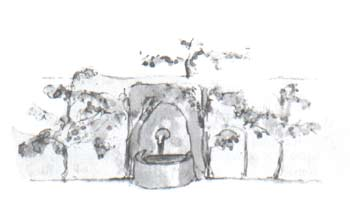

这是我在沙漠上出了事故的第八天。我听着有关这个商人的故事，喝完了我 所备用的最后一滴水。
“啊！”我对小王子说，“你回忆的这些故事真美。可是，我还没有修好我 的飞机。我没有喝的了，假如我能悠哉游哉地走到水泉边去，我一定也会很高兴 的！”
小王子对我说：“我的朋友狐狸……”
“我的小家伙，现在还说什么狐狸！”
“为什么？”
“因为这就要渴死人了。”
他不理解我的思路，他回答我道：
“即使快要死了，有过一个朋友也好么！我就为我有过一个狐狸朋友而感到 很高兴……”
“他不顾危险。”我自己思量着，“他从来不知道饥渴。只要有点阳光，他 就满足了……”
他看着我，答复着我的思想：
“我也渴了……我们去找一口井吧……”
我显出厌烦的样子：在茫茫的大沙漠上盲目地去找水井，真荒唐。然而我们 还是开始去寻找了。
当我们默默地走了好几个小时以后，天黑了下来，星星开始发出光亮。由于 渴我有点发烧，我看着这些星星，象是在做梦一样。小王子的话在我的脑海中跳 来跳去。
“你也渴吗？”我问他。
他却不回答我的问题，只是对我说：
“水对心也是有益处的……”
我不懂他的话是什么意思，可我也不做声……我知道不应该去问他。
他累了，他坐下来。我在他身旁坐下。沉默了一会，他又说道：
“星星是很美的，因为有一朵人们看不到的花……”
我回答道：“当然。”而我默默地看着月光下沙漠的褶皱。
“沙漠是美的。”他又说道。
确实如此。我一直很喜欢沙漠。坐在一个沙丘上，什么也看不见、听不见。 但是，却有一种说不出的东西在默默地放着光芒……
“使沙漠更加美丽的，就是在某个角落里，藏着一口井……”

我很惊讶，突然明白了为什么沙漠放着光芒。当我还是一个小孩子的时候， 我住在一座古老的房子里，而且传说，这个房子里埋藏着一个宝贝。当然，从来 没有任何人能发现这个宝贝，可能，甚至也没有人去寻找过。但是，这个宝贝使 整个房子着了魔似的。我家的房子在它的心灵深处隐藏着一个秘密……
我对小王子说道：“是的，无论是房子，星星，或是沙漠，使它们美丽的东 西是看不见的！”
“我真高兴，你和我的狐狸的看法一样。”小王子说。
小王子睡觉了，我就把他抱在怀里，又重新上路了。我很激动。就好象抱着 一个脆弱的宝贝。就好象在地球上没有比这更脆弱的了。我借着月光看着这惨白 的面额，这双紧闭的眼睛，这随风飘动的绺绺头发，这时我对自己说道：“我所 看到的仅仅是外表。最重要的是看不见的……”
由于看到他稍稍张开的嘴唇露出一丝微笑，我又自言自语地说：“在这个熟 睡了的小王子身上，使我非常感动的，是他对他那朵花的忠诚，是在他心中闪烁 的那朵玫瑰花的形象。这朵玫瑰花，即使在小王子睡着了的时候，也象一盏灯的 火焰一样在他身上闪耀着光辉……”这时，我就感觉到他更加脆弱。应该保护灯焰： 一阵风就可能把它吹灭……
于是，就这样走着，我在黎明时发现了水井。